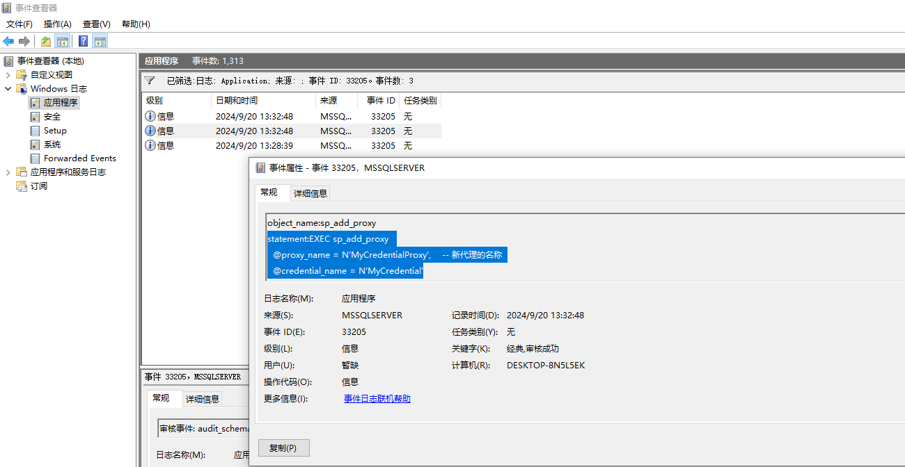

在某些渗透场景下，我们已经获取到了SQL server的DBA权限，可以通过xp_cmdshell或其他方法以SQL Server服务帐户执行系统命令，然而，SQL Server服务帐户被配置为作为NT Service\MSSQLSERVER运行，这是一个在操作系统上具有有限权限的帐户，所以接下来，我们一般会考虑本地权限提升。
Windows以Service\MSSQLSERVER权限提升的方法有很多，比如经典的烂土豆漏洞，然而，如果在SQL Server实例上配置了SQL Server凭据，可以尝试通过SQL Server凭据进行权限提升。
SQL Server中的凭据对象
在 SQL Server 中，一个 Credential Object（凭据对象）是用来存储访问 SQL Server 外部资源所需的身份验证信息的记录。这些外部资源可能包括服务器、共享文件夹、Azure Blob 存储或其他需要特定权限的资源。凭据对象通常包含 Windows 用户名和密码，这些信息由 SQL Server 在内部使用，以便在需要时进行身份验证。
我们首先创建一个名为testuser的本地用户并使其成为本地管理员。
1 | net user testuser P@ssw0rd! /add |
在SQL server中创建凭据对象。
1 | CREATE CREDENTIAL [MyCredential] |
凭据对象利用
1.首先判断是否具有系统管理员访问权限
1 | SELECT IS_SRVROLEMEMBER('sysadmin') AS IsSysAdmin; |
2.查询SQL Server实例上配置的凭据列表，这里我们可以看到之前添加的凭据信息
1 | SELECT * FROM sys.credentials |
3.列出代理帐户。
1 | USE msdb; |
SQL Server 代理帐户是用于运行 SQL Server Agent 服务的 Windows 帐户。SQL Server Agent 是一个 Windows 服务，负责执行计划的数据库管理任务，这些任务被称为作业（jobs）。代理帐户定义了 SQL Server Agent 运行及其网络权限的 Windows 帐户。
4.创建代理帐户。如果不存在滥用/模拟的凭证对象的代理帐户，我们可以创建一个并为其分配所需的权限。
1 | USE msdb; |
5.验证是否已创建代理帐户。
1 | USE msdb; |
6.创建代理作业来执行所需的代码或命令，可用的默认选项包括PowerShell、VBScript、JScript和CMDEXEC。下面我们尝试在C：\Windows\Temp\文件夹中创建一个名为whoami.txt的文件，以证明该进程是在代理用户的上下文中执行的。
1 | USE msdb; |
这一步如果成功则继续下一步，如果显示下图中的SQLServerAgent 当前未运行，因此无法将此操作通知它则说明SQL Server代理服务没有开启，无法执行代理作业
我们可以通过cmd命令开启SQL Server代理服务（SQL Server服务账户无权限开启）
1 | net start SQLSERVERAGENT |
开启服务后可继续执行后续步骤，不需要再重新执行上面的操作。
7.使用下面的查询来验证代理正在使用代理帐户。该查询还将列出配置为使用代理帐户运行的所有其他代理作业。
1 | USE msdb; |
8.执行代理作业。
1 | EXEC sp_start_job @job_name = N'WhoAmIJob'; |
9.查看c:\windows\temp\whoami.txt文件内容，可以发现命令被成功执行。
综上，我们成功利用Sql Server的凭据对象来执行了相关用户的命令。除此之外，注意到在创建凭据对象的时候还保存了管理用户的密码，所以当我们发现存在凭据对象时还可以尝试获取用户的明文密码，decrypting-mssql-credential-passwords一文中概述了整个解密过程，但需要系统管理员权限，可用于后渗透横向操作。
防守检测
要检测使用代理帐户滥用凭据对象的情况，可以创建服务器和数据库审核规范，以便通过监视sp_add_proxy和sp_grant_proxy_to_subsystem存储过程的执行来识别何时创建代理帐户。SQL Server还可以配置为将这些事件发送到Windows应用程序日志，在该日志中可以对事件ID 33205启用监视。
1.创建服务器审计。
1 | Use master |
2.创建数据库审计规范来捕获msdb数据库中的服务器级和数据库级更改。
1 | USE msdb; |
3.启用规范。
1 | Use master |
4.此时尝试执行代理帐户创建步骤并查看Windows应用程序日志中的事件ID 33205，则可以看到sp_add_proxy和sp_grant_proxy_to_subsystem存储过程执行的实例。

参考：
Hijacking SQL Server Credentials using Agent Jobs for Domain Privilege Escalation